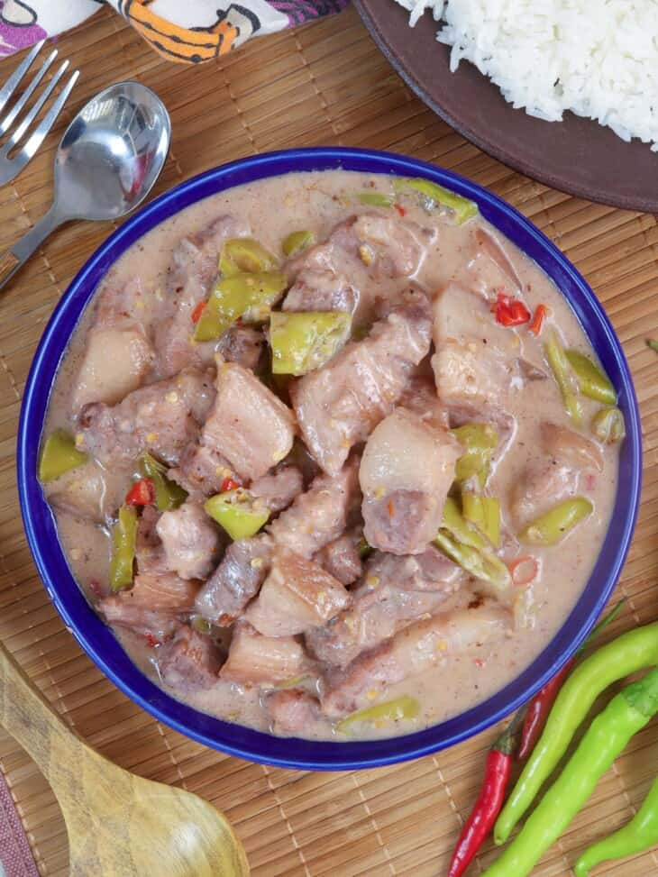

Bicol express, known natively in Bikol as sinilihan, is a popular Filipino dish which was popularized in the district of Malate, Manila, but made in traditional Bicolano style.
Ingredients
1 tablespoon canola oil
1 onion, peeled and sliced thinly
4 cloves garlic, peeled and minced
2 pounds pork belly, cut into 1-inch cubes
2 tablespoons fresh shrimp paste
1 can(13.5 ounces) coconut milk
1 cup water
14 pieces Thai chili peppers, stemmed and minced
2 cups finger chilies, sliced
1 cup coconut cream
Salt and pepper
Steps
In a wide pot over medium heat, heat oil. Add onions and garlic and cook, stirring occasionally, until softened.
Add pork and cook, stirring occasionally, until lightly browned.
Add shrimp paste and cook, stirring occasionally, for about 1 to 2 minutes.
Add coconut milk, water, and chili peppers. Bring to a simmer and cook for about 35 to 35 minutes or until pork is tender and liquid is reduced and begins to render fat.
Add finger chilies and cook, stirring regularly, for about 1 to 2 minutes.
Add coconut cream and continue to simmer until thickened and begins to render fat.